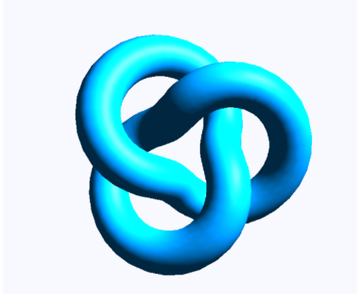
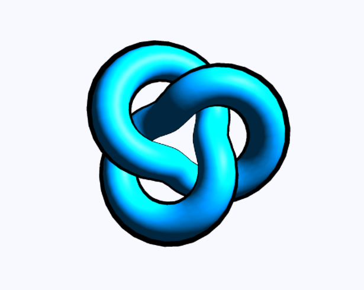

We first looked over the Three.js API documentation to get a feel of how and where to start coding our shaders. Then, we created a scene on Three.js with point lights to highlight the objectt when Phong shading is implemented. Then, we selected the torus knot (provided by Three.js), as a base object for our technical illustration.
Next, we imported Phong shading, and applied it onto our torus knot in order to create a specular material. This step is important because Phong shading is widely used in many technical illustrations and we would like to replicate that effect ass closely as possible.
|  |
After implementing edge shading, we had to figure out how to create a perspective based edge outline for technical illustrations. The edge outline has to be perspective based much like the edge outlines we see in paper cited. We then figured out that we can create such an outline by implementing it as a new mesh geometry surrounding our torus knot. We then created such an outline and changed the color of the outline to black to further see the resemblance with technical illustration drawings.
|  |
Overall, we would say our progress is mostly on-track along our original schedule, but now we have a more direct idea of where to explore next to complete our implementation of a technical drawing shader. We are planning to work on our cool to warm shading, and possibly more shaders in the next coming weeks
Final Presentation Thu 5/6
Final Deliverables Thu 5/11
We will be mostly following the paper by Gooch, Gooch, Shirley, and Cohen: Gooch, A., Gooch, B., Shirley, P., & Cohen, E. (1998). A Non-Photorealistic Lighting Model For Automatic Technical Illustration. Retrieved from https://citeseerx.ist.psu.edu/viewdoc/download?doi=10.1.1.46.6762&rep=rep1&type=pdf
Project 4 code base (using pre-existing Phong shading implementation) https://cs184.eecs.berkeley.edu/sp21/docs/proj4